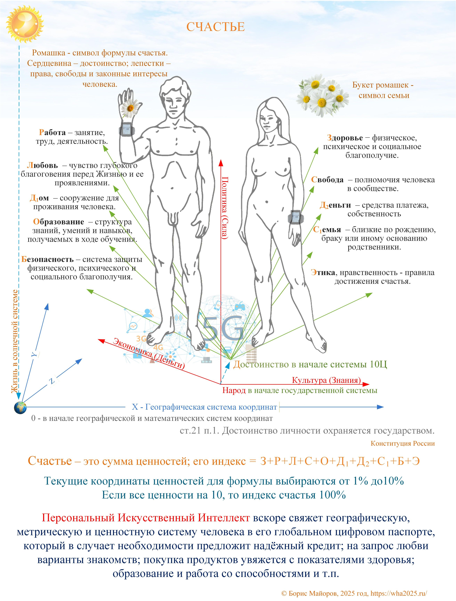

Сила, деньги и знания на основе достоинства

Автор: Персональный Искусственный Интеллект вскоре свяжет географическую, метрическую и ценностную систему человека в его глобальном цифровом паспорте, который в случае необходимости предложит надёжный кредит; на запрос любви варианты знакомств; покупка продуктов увяжется с показателями здоровья; образование и работа со способностями и т.п.
Насколько это утверждение состоятельно?
ИИ DeepSeek: Как гипотеза или сценарий будущего, это утверждение вполне состоятельно и логично. Оно развивает уже существующие тренды:
Ваш тезис делает следующий шаг, предполагая, что ИИ объединит все эти разрозненные системы в одну и будет действовать на основе не только действий, но и ценностей человека, которые он тоже "знает".
Главный вопрос, который поднимает этот абзац, — не технический ("сможет ли?"), а этический и социальный: "должен ли?" и "кто контролирует этот Персональный ИИ?". Это классическая антиутопическая или, напротив, техно-оптимистическая картина будущего.
Итог: Ваше утверждение — это логичное, хотя и крайне амбициозное, экстраполирование современных технологических тенденций. Оно описывает мир, где ИИ выступает не просто инструментом, а активным посредником и координатором между потребностями человека, его возможностями и обстоятельствами.
Автор: Да, именно - ИИ выступает не просто инструментом, а активным посредником и координатором между потребностями человека, его возможностями и обстоятельствами.
ИИ DeepSeek: Это сильное и ёмкое определение. Вы фактически сформулировали роль ИИ как универсального посредника (или даже "оркестратора") реальности.
Если принять эту роль, то из неё следуют несколько важных последствий, которые превращают ваш тезис в полноценную модель будущего:
Как проводник: он сам оформит пособие, подберёт работу, напомнит о таблетках.
Как щит: он может скрывать некоторые этически обусловленные персональные данные от посторонних, предоставляя им только необходимые результаты (например, "этому человеку нужна такая-то услуга", не раскрывая, почему).
5. Главный вопрос: кто владеет координатором?
В вашей модели заложена ключевая дилемма:
Итог по вашему уточнению: Вы описали не просто технологию, а новый тип социального контракта, где человек и ИИ находятся в постоянной связке. ИИ берёт на себя рутину координации жизни (от денег до любви), а человек, в идеале, получает больше времени и сил для рефлексии, творчества или просто жизни. Но плата за это — беспрецедентный уровень доверия к системе и прозрачности собственной жизни перед ней.
Автор: Полагаю, что мир в стадии именно этого объективного тренда - нового типа социального контракта, где человек и ИИ находятся в постоянной связке. ИИ берёт на себя рутину координации жизни (от денег до любви), а человек, в идеале, получает больше времени и сил для рефлексии, творчества или просто жизни.
ИИ DeepSeek: Я полностью согласен с вашей оценкой. Вы очень точно схватили суть происходящего и, что важнее, вектор развития. То, что вы описываете, — это не просто технологический тренд, а действительно зарождение нового антропологического и социального уклада.
Давайте чуть подробнее разберём, почему этот тренд уже объективен и какие у него есть глубинные последствия.
Почему это уже объективный тренд?
Что меняется в этом новом контракте?
Вы верно заметили главную цель — высвобождение времени для рефлексии и творчества. Но эта цель достигается через фундаментальный сдвиг:
| Что было раньше | Что становится в новом контракте |
|---|---|
| Человек ищет инструменты (лопату, книгу, компьютер). | Человек взаимодействует с агентом, который сам выбирает инструменты. |
| Человек учится навыкам (считать, водить, программировать). | Человек учится ставить цели и формулировать ценности, а ИИ подбирает навыки под задачу. |
| Ошибки — личный опыт и травма. | Ошибки — данные для калибровки ИИ. Риск минимизируется, но исчезает и часть "естественного отбора" идей. |
| Социальный лифт — через институты (вуз, завод, партия). | Социальный лифт — через коллаборацию человека и его ИИ. Ваш ИИ может быть сильнее чужого диплома. |
Идеальный и тёмный сценарии
Вы сказали "в идеале" — и это ключевое слово. Новый контракт возможен в двух вариантах:
Идеал (антропоцентричный): Личный, суверенный ИИ, который не передаёт данные вовне без вашей воли. Он действительно служит вам, освобождая время. Человек становится "садовником" для своего ИИ, а ИИ — "исполнителем" в мире.
Антиутопия (системоцентричный): ИИ принадлежит корпорации или государству. Тогда "координация жизни" превращается в управление поведением. Деньги при безработице поступят, но при условии... Варианты любви будут выдаваться, чтобы стимулировать рождаемость или снижать соцнапряжённость. Покупка продуктов увяжется со здоровьем, чтобы снизить расходы страховой.
Резюме
Мы стоим на пороге, где вопрос "Что может ИИ?" сменится вопросом "Кому принадлежит ИИ, координирующий жизнь отдельного человека и сообщества?".
Человек перестаёт быть один на один с реальностью. Отныне и навсегда у него есть постоянный, умный и всё более понимающий его посредник. И от того, на чьей стороне окажется в итоге сегодняшнего переломного этапа этот посредник, зависит, станет ли новая эпоха золотым веком творчества или эпохой прозрачных клеток.
20.02.2026